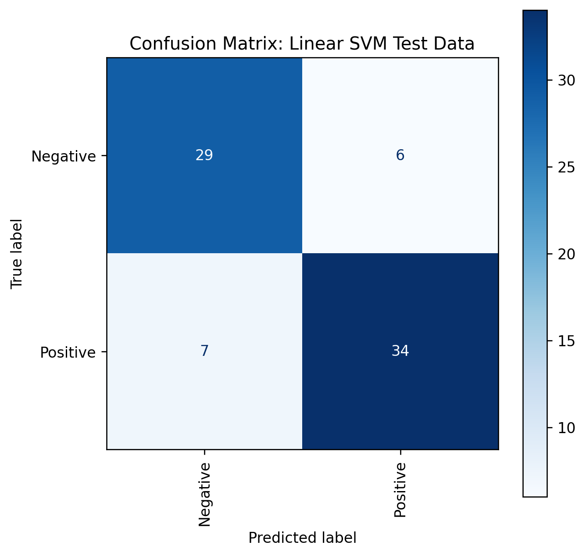
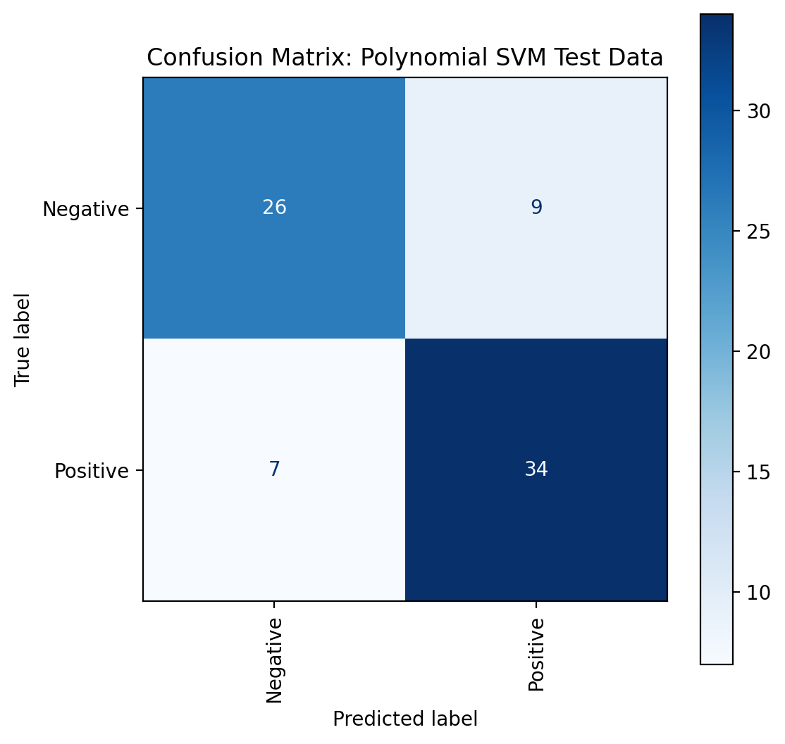
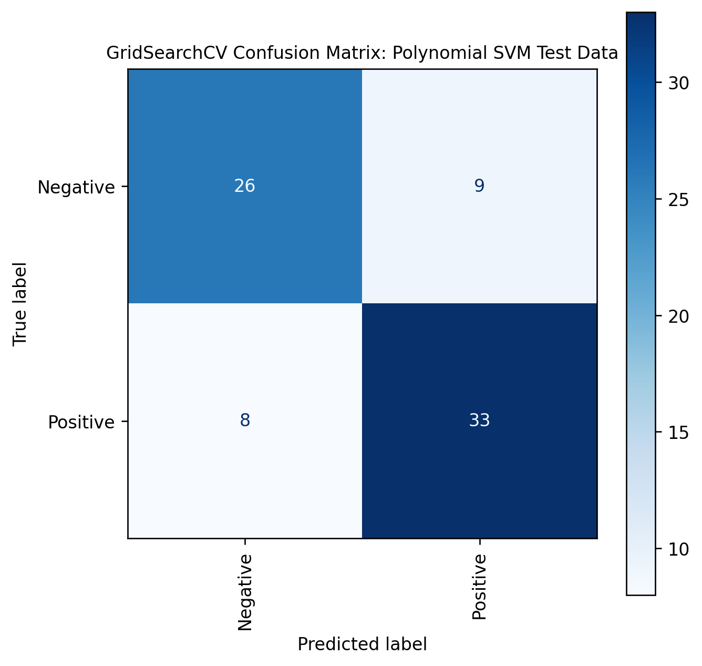
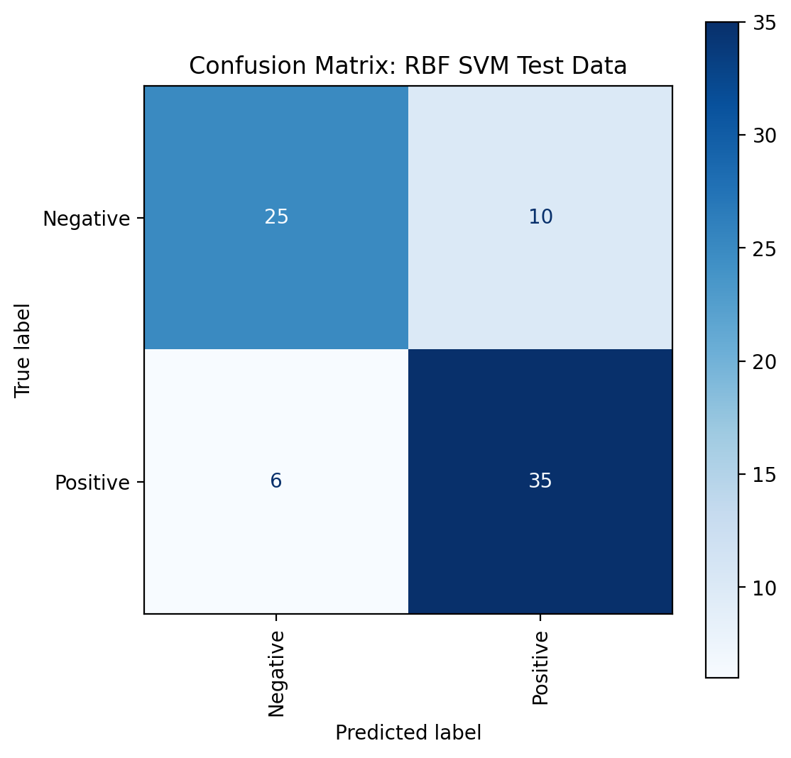
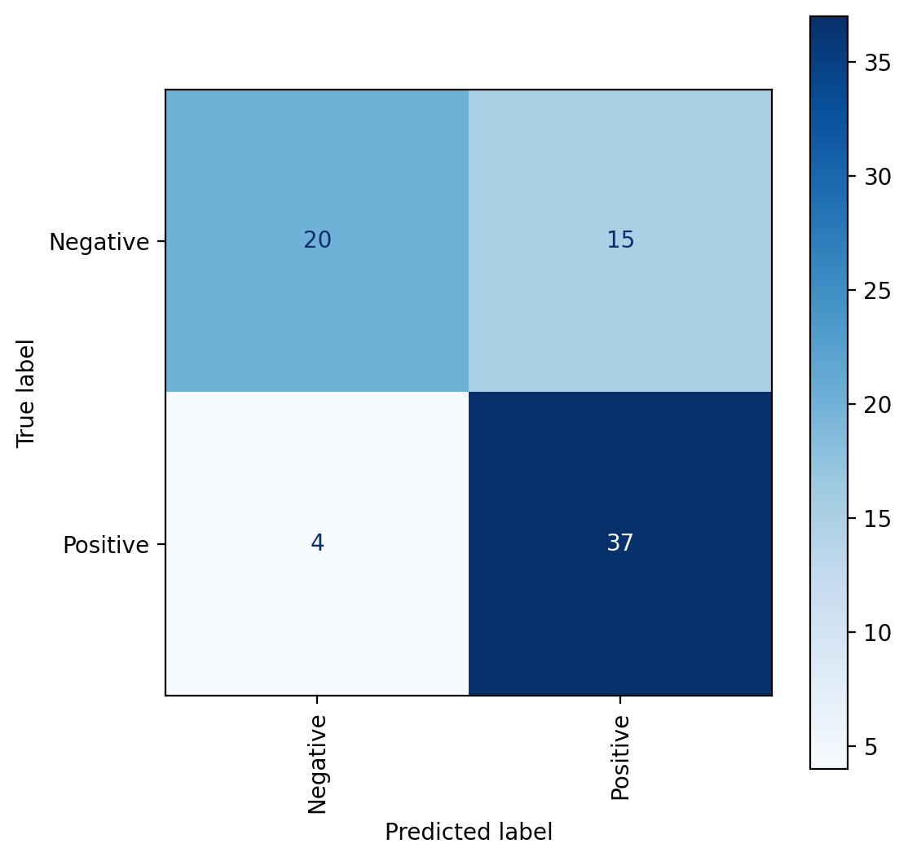

Code
import pandas as pd
import numpy as np
import matplotlib.pyplot as plt
import seaborn as sns
from sklearn.metrics import confusion_matrix, ConfusionMatrixDisplay, classification_report
import warnings
warnings.filterwarnings("ignore")


The purpose of this tab is to examine the performance of 4 different SVM kernels, namely Linear, Polynomial, RBF, and Sigmoid, on our cleaned text data gathered from Twitter and News APIs. If we recall, the Twitter and News text sentiment analyses represented that, on average, the tweets are composed of text with greater negative sentiment than that of the news content. Therefore, our data has a fair mix of positive and negative text, which means that our labels will not be heavily imbalanced!
Before we begin SVM modeling, we shall test our data on a random classifier, which is a baseline model, and output accuracy, precision, and recall values. We shall use sklearn’s train-test split function to divide the data into an 80-20 train-test split respectively. Next, we shall employ the 4 aforementioned SVM models and compare their overall performance with each other. We shall also perform hyperparameter tuning, including changing the regularization values from 0.1 to 10 for all models and changing the Gamma values from 1 to 0.001 for all models excluding the Linear SVM. Our goal is to try to achieve even better performances from all the 4 models using hyperparameter tuning and comparing the tuned models with the initial SVM models.
Our combined dataset of tweets and news content included a total of 380 observations. We tested support vector machines and a random classifier on this data. The hyperparameter tuned RBF and Sigmoid SVM models had the highest classification accuracies at 83% and 82% respectively. However, the lowest accuracy was obtained from the initial Sigmoid SVM model with 71% accuracy. Therefore, hyperparameter tuning is an important step in the machine learning process and it opens insights on why and how a particular model performs when its parameters are dialed back and forth.
import pandas as pd
import numpy as np
import matplotlib.pyplot as plt
import seaborn as sns
from sklearn.metrics import confusion_matrix, ConfusionMatrixDisplay, classification_report
import warnings
warnings.filterwarnings("ignore")# Import data and show first 5 rows
tweets_news_clean = pd.read_csv("../../data/Clean Data/Clean_Tweets_News_Merged.csv", index_col=[0])tweets_news_clean.head()| Content_Lemmatized_Sentiment_Analysis | label | |
|---|---|---|
| 0 | youre serious owning digital currency need ha... | Negative |
| 1 | wallet pocket store physical currency crypto ... | Positive |
| 2 | keep saf… +3718 char .pointed question coinb... | Negative |
| 3 | olivia zollino report… +1 char .posted ether... | Positive |
| 4 | julian satterthwaite report .. posted long-awa... | Negative |
print("Data shape is: ", tweets_news_clean.shape)Data shape is: (380, 2)Sentiment is the dependent variable and the bag-of-words is our independent variable. The raw independent variable of lemmatized and cleaned texts of Twiiter and News API are turned into a bag-of-words document using CountVectorizer().
# Split the dataframe into X and y and then split X and y into train and test sets.
from sklearn.model_selection import train_test_split
from sklearn.feature_extraction.text import CountVectorizer
np.random.seed(3737)
X = tweets_news_clean["Content_Lemmatized_Sentiment_Analysis"]
y = tweets_news_clean["label"]
x_train, x_test, y_train, y_test = train_test_split(X, y,
random_state = 1,test_size=0.2
)
count_vector = CountVectorizer()
training_data = count_vector.fit_transform(x_train)
testing_data = count_vector.transform(x_test)# Show the shape of the train and test sets, and levels of the dependent variable (Y)
print("Shape of x_train is: ", x_train.shape)
print("Shape of x_test is: ",x_test.shape)
print("Shape of y_train is: ",y_train.shape)
print("Shape of y_test is: ",y_test.shape)
print("The levels of the dependent variable (Sentiment) are:")
print(y.value_counts())Shape of x_train is: (304,)
Shape of x_test is: (76,)
Shape of y_train is: (304,)
Shape of y_test is: (76,)
The levels of the dependent variable (Sentiment) are:
Negative 205
Positive 175
Name: label, dtype: int64import numpy as np
import random
from collections import Counter
from sklearn.metrics import accuracy_score
from sklearn.metrics import precision_recall_fscore_support## RANDOM CLASSIFIER
def random_classifier(y_data):
ypred=[]
max_label=np.max(y_data); #print(max_label)
for i in range(0,len(y_data)):
ypred.append(int(np.floor((max_label+1)*np.random.uniform(0,1))))
print("\n\n-----RANDOM CLASSIFIER-----")
print("count of prediction:",Counter(ypred).values()) # counts the elements' frequency
print("probability of prediction:",np.fromiter(Counter(ypred).values(), dtype=float)/len(y_data)) # counts the elements' frequency
print("accuracy",accuracy_score(y_data, ypred))
print("precision, recall, fscore, support",precision_recall_fscore_support(y_data, ypred))from sklearn import preprocessing
# label_encoder object knows how to understand word labels.
label_encoder = preprocessing.LabelEncoder()
# Encode labels in column 'species'.
y_encoded = label_encoder.fit_transform(y)
print("\nBINARY CLASS: NON-UNIFORM LOAD (Positive: 175 count, Negative: 205 count")
print("Unique labels and respective counts after one-hot encoding: ")
print("0 = Negative and 1 = Positive")
unique, counts = np.unique(y_encoded, return_counts=True)
print(np.asarray((unique, counts)).T)
random_classifier(y_encoded)
BINARY CLASS: NON-UNIFORM LOAD (Positive: 175 count, Negative: 205 count
Unique labels and respective counts after one-hot encoding:
0 = Negative and 1 = Positive
[[ 0 205]
[ 1 175]]
-----RANDOM CLASSIFIER-----
count of prediction: dict_values([202, 178])
probability of prediction: [0.53157895 0.46842105]
accuracy 0.5447368421052632
precision, recall, fscore, support (array([0.57920792, 0.50561798]), array([0.57073171, 0.51428571]), array([0.57493857, 0.50991501]), array([205, 175]))The baseline classifier outputs an overall accuracy of 54% and an f-1 score of 0.57493857 for Negative labels and 0.50991501 for Positive labels respectively. The Linear SVM kernel should perform better than this, let’s find out…
# Import svc from sklearn.svm and classsification_report, confusion_matrix from sklearn.metrics.
# Fit the classfier on the training data and predict on the test data. Set the classifier to be linear and C between 0.35-0.75.
from sklearn.svm import SVC
clf = SVC(C=0.45, kernel='linear')
clf.fit(training_data, y_train)
yp_train = clf.predict(training_data)
yp_test = clf.predict(testing_data)# Calculate the confusion matrix and classification report for the train and test data.
cm_train = confusion_matrix(y_train, yp_train, labels=clf.classes_)
cm_test = confusion_matrix(y_test, yp_test, labels=clf.classes_)
target_names = ['Positive', 'Negative']
clf_report_train_linear = classification_report(y_train, yp_train, target_names=target_names, output_dict=True)
clf_report_test_linear = classification_report(y_test, yp_test, target_names=target_names, output_dict=True)# Save the results in a data frame.
clf_report_train_linear = pd.DataFrame(clf_report_train_linear).transpose()
clf_report_test_linear = pd.DataFrame(clf_report_test_linear).transpose()print("Classification Report of Linear SVM Train Data:")
clf_report_train_linearClassification Report of Linear SVM Train Data:| precision | recall | f1-score | support | |
|---|---|---|---|---|
| Positive | 1.0 | 1.0 | 1.0 | 170.0 |
| Negative | 1.0 | 1.0 | 1.0 | 134.0 |
| accuracy | 1.0 | 1.0 | 1.0 | 1.0 |
| macro avg | 1.0 | 1.0 | 1.0 | 304.0 |
| weighted avg | 1.0 | 1.0 | 1.0 | 304.0 |
print("Classification Report of Linear SVM Test Data:")
clf_report_test_linearClassification Report of Linear SVM Test Data:| precision | recall | f1-score | support | |
|---|---|---|---|---|
| Positive | 0.805556 | 0.828571 | 0.816901 | 35.000000 |
| Negative | 0.850000 | 0.829268 | 0.839506 | 41.000000 |
| accuracy | 0.828947 | 0.828947 | 0.828947 | 0.828947 |
| macro avg | 0.827778 | 0.828920 | 0.828204 | 76.000000 |
| weighted avg | 0.829532 | 0.828947 | 0.829096 | 76.000000 |
# Display Confusion Matrix for the test data. Remember to use the ConfusionMatrixDisplay function.
fig, ax = plt.subplots(figsize=(6,6), dpi=120)
disp = ConfusionMatrixDisplay(confusion_matrix=cm_test, display_labels=clf.classes_)
disp.plot(ax=ax, cmap=plt.cm.Blues, values_format='d', xticks_rotation='vertical')
plt.title("Confusion Matrix: Linear SVM Test Data")Text(0.5, 1.0, 'Confusion Matrix: Linear SVM Test Data')
from sklearn.svm import SVC
from sklearn.model_selection import GridSearchCV
# defining parameter range
param_grid = {'C': [0.1, 0.3, 0.7, 1, 5, 10],
'kernel': ['linear']}
grid = GridSearchCV(SVC(), param_grid, refit = True, verbose = -1)
grid.fit(training_data, y_train)
# print best parameter after tuning
print("The best parameters after tuning are: ", grid.best_params_)
# print how our model looks after hyper-parameter tuning
print("The best model after tuning looks like: ",grid.best_estimator_)
grid_predictions = grid.predict(testing_data)
# print classification report
print(classification_report(y_test, grid_predictions))The best parameters after tuning are: {'C': 5, 'kernel': 'linear'}
The best model after tuning looks like: SVC(C=5, kernel='linear')
precision recall f1-score support
Negative 0.80 0.80 0.80 35
Positive 0.83 0.83 0.83 41
accuracy 0.82 76
macro avg 0.81 0.81 0.81 76
weighted avg 0.82 0.82 0.82 76
# Display Confusion Matrix for the above hyperparameter model.
cm_test = confusion_matrix(y_test, grid_predictions, labels=grid.classes_)
fig, ax = plt.subplots(figsize=(6,6), dpi=120)
disp = ConfusionMatrixDisplay(confusion_matrix=cm_test, display_labels=clf.classes_)
disp.plot(ax=ax, cmap=plt.cm.Blues, values_format='d', xticks_rotation='vertical')
title_font = {'size':'10'}
plt.title("GridSearchCV Confusion Matrix: Linear SVM Test Data", **title_font)Text(0.5, 1.0, 'GridSearchCV Confusion Matrix: Linear SVM Test Data')Therefore, after performing hyperparameter tuning, the performance of the Linear SVM model remains same. This means that we had initially selected the best model before performing hyperparameter tuning for Linear SVM. Let’s see if we can gain a better accuracy using Polynomial SVM kernels…
# Fit the classfier on the training data and predict on the test data. Set the classifier to be polynomial.
clf = SVC(C=0.45, kernel = 'poly', degree=2)
clf.fit(training_data, y_train)
yp_train = clf.predict(training_data)
yp_test = clf.predict(testing_data)# Calculate the confusion matrix and classification report for the train and test data.
cm_train = confusion_matrix(y_train, yp_train, labels=clf.classes_)
cm_test = confusion_matrix(y_test, yp_test, labels=clf.classes_)
clf_report_train_poly = classification_report(y_train, yp_train, target_names=target_names, output_dict=True)
clf_report_test_poly = classification_report(y_test, yp_test, target_names=target_names, output_dict=True)# Save the results in a data frame.
clf_report_train_poly = pd.DataFrame(clf_report_train_poly).transpose()
clf_report_test_poly = pd.DataFrame(clf_report_test_poly).transpose()print("Classification Report of Polynomial SVM Train Data:")
clf_report_train_polyClassification Report of Polynomial SVM Train Data:| precision | recall | f1-score | support | |
|---|---|---|---|---|
| Positive | 0.951220 | 0.688235 | 0.798635 | 170.000000 |
| Negative | 0.707182 | 0.955224 | 0.812698 | 134.000000 |
| accuracy | 0.805921 | 0.805921 | 0.805921 | 0.805921 |
| macro avg | 0.829201 | 0.821730 | 0.805667 | 304.000000 |
| weighted avg | 0.843650 | 0.805921 | 0.804834 | 304.000000 |
print("Classification Report of Polynomial SVM Test Data:")
clf_report_test_polyClassification Report of Polynomial SVM Test Data:| precision | recall | f1-score | support | |
|---|---|---|---|---|
| Positive | 0.787879 | 0.742857 | 0.764706 | 35.000000 |
| Negative | 0.790698 | 0.829268 | 0.809524 | 41.000000 |
| accuracy | 0.789474 | 0.789474 | 0.789474 | 0.789474 |
| macro avg | 0.789288 | 0.786063 | 0.787115 | 76.000000 |
| weighted avg | 0.789400 | 0.789474 | 0.788884 | 76.000000 |
# Display Confusion Matrix for the test data. Remember to use the ConfusionMatrixDisplay function.
fig, ax = plt.subplots(figsize=(6,6), dpi=100)
disp = ConfusionMatrixDisplay(confusion_matrix=cm_test, display_labels=clf.classes_)
disp.plot(ax=ax, cmap=plt.cm.Blues, values_format='d', xticks_rotation='vertical')
plt.title("Confusion Matrix: Polynomial SVM Test Data")Text(0.5, 1.0, 'Confusion Matrix: Polynomial SVM Test Data')
# defining parameter range
param_grid = {'C': [0.1, 0.5, 1, 5],
'gamma': [1, 0.1, 0.01, 0.001],
'kernel': ['poly']}
grid = GridSearchCV(SVC(), param_grid, refit = True, verbose = -1)
grid.fit(training_data, y_train)
# print best parameter after tuning
print("The best parameters after tuning are: ", grid.best_params_)
# print how our model looks after hyper-parameter tuning
print("The best model after tuning looks like: ",grid.best_estimator_)
grid_predictions = grid.predict(testing_data)
# print classification report
print(classification_report(y_test, grid_predictions))The best parameters after tuning are: {'C': 0.5, 'gamma': 1, 'kernel': 'poly'}
The best model after tuning looks like: SVC(C=0.5, gamma=1, kernel='poly')
precision recall f1-score support
Negative 0.76 0.74 0.75 35
Positive 0.79 0.80 0.80 41
accuracy 0.78 76
macro avg 0.78 0.77 0.77 76
weighted avg 0.78 0.78 0.78 76
# Display Confusion Matrix for the above hyperparameter model.
cm_test = confusion_matrix(y_test, grid_predictions, labels=grid.classes_)
fig, ax = plt.subplots(figsize=(6,6), dpi=120)
disp = ConfusionMatrixDisplay(confusion_matrix=cm_test, display_labels=clf.classes_)
disp.plot(ax=ax, cmap=plt.cm.Blues, values_format='d', xticks_rotation='vertical')
title_font = {'size':'10'}
plt.title("GridSearchCV Confusion Matrix: Polynomial SVM Test Data", **title_font)Text(0.5, 1.0, 'GridSearchCV Confusion Matrix: Polynomial SVM Test Data')
Therefore, after performing hyperparameter tuning, the performance of the Polynomial SVM model remains same. This means that we had initially selected the best model before performing hyperparameter tuning for Polynomial SVM. Even after setting different gamma values and regularization parameters, the initial model is as good as the hyperparameterized model. Moreover, the weighted overall accuracy is 3% lower than that of the Linear SVM models! Probably our “easy-to-learn” data does not require more complex models than Linear SVM. However, let’s see if we can still gain a better accuracy using RBF SVM kernels (best-performing SVM kernel)…
# Fit the classfier on the training data and predict on the test data. Set the classifier to be linear and C between 0.35-0.75.
clf = SVC(C=0.45, kernel = 'rbf')
clf.fit(training_data, y_train)
yp_train = clf.predict(training_data)
yp_test = clf.predict(testing_data)# Calculate the confusion matrix and classification report for the train and test data.
cm_train = confusion_matrix(y_train, yp_train, labels=clf.classes_)
cm_test = confusion_matrix(y_test, yp_test, labels=clf.classes_)
clf_report_train_RBF = classification_report(y_train, yp_train, target_names=target_names, output_dict=True)
clf_report_test_RBF = classification_report(y_test, yp_test, target_names=target_names, output_dict=True)# Save the results in a data frame.
clf_report_train_RBF = pd.DataFrame(clf_report_train_RBF).transpose()
clf_report_test_RBF = pd.DataFrame(clf_report_test_RBF).transpose()print("Classification Report of RBF SVM Train Data:")
clf_report_train_RBFClassification Report of RBF SVM Train Data:| precision | recall | f1-score | support | |
|---|---|---|---|---|
| Positive | 0.933333 | 0.658824 | 0.772414 | 170.000000 |
| Negative | 0.684783 | 0.940299 | 0.792453 | 134.000000 |
| accuracy | 0.782895 | 0.782895 | 0.782895 | 0.782895 |
| macro avg | 0.809058 | 0.799561 | 0.782433 | 304.000000 |
| weighted avg | 0.823775 | 0.782895 | 0.781247 | 304.000000 |
print("Classification Report of RBF SVM Test Data:")
clf_report_test_RBFClassification Report of RBF SVM Test Data:| precision | recall | f1-score | support | |
|---|---|---|---|---|
| Positive | 0.806452 | 0.714286 | 0.757576 | 35.000000 |
| Negative | 0.777778 | 0.853659 | 0.813953 | 41.000000 |
| accuracy | 0.789474 | 0.789474 | 0.789474 | 0.789474 |
| macro avg | 0.792115 | 0.783972 | 0.785765 | 76.000000 |
| weighted avg | 0.790983 | 0.789474 | 0.787990 | 76.000000 |
# Display Confusion Matrix for the test data. Remember to use the ConfusionMatrixDisplay function.
fig, ax = plt.subplots(figsize=(6,6), dpi=100)
disp = ConfusionMatrixDisplay(confusion_matrix=cm_test, display_labels=clf.classes_)
disp.plot(ax=ax, cmap=plt.cm.Blues, values_format='d', xticks_rotation='vertical')
plt.title("Confusion Matrix: RBF SVM Test Data")Text(0.5, 1.0, 'Confusion Matrix: RBF SVM Test Data')
# defining parameter range
param_grid = {'C': [0.1, 1, 10, 100, 1000],
'gamma': [1, 0.1, 0.01, 0.001, 0.0001],
'kernel': ['rbf']}
grid = GridSearchCV(SVC(), param_grid, refit = True, verbose = -1)
grid.fit(training_data, y_train)
# print best parameter after tuning
print("The best parameters after tuning are: ", grid.best_params_)
# print how our model looks after hyper-parameter tuning
print("The best model after tuning looks like: ",grid.best_estimator_)
grid_predictions = grid.predict(testing_data)
# print classification report
print(classification_report(y_test, grid_predictions))The best parameters after tuning are: {'C': 10, 'gamma': 0.01, 'kernel': 'rbf'}
The best model after tuning looks like: SVC(C=10, gamma=0.01)
precision recall f1-score support
Negative 0.81 0.83 0.82 35
Positive 0.85 0.83 0.84 41
accuracy 0.83 76
macro avg 0.83 0.83 0.83 76
weighted avg 0.83 0.83 0.83 76
# Display Confusion Matrix for the above hyperparameter model.
cm_test = confusion_matrix(y_test, grid_predictions, labels=grid.classes_)
fig, ax = plt.subplots(figsize=(6,6), dpi=120)
disp = ConfusionMatrixDisplay(confusion_matrix=cm_test, display_labels=clf.classes_)
disp.plot(ax=ax, cmap=plt.cm.Blues, values_format='d', xticks_rotation='vertical')
title_font = {'size':'10'}
plt.title("GridSearchCV Confusion Matrix: RBF SVM Test Data", **title_font)Text(0.5, 1.0, 'GridSearchCV Confusion Matrix: RBF SVM Test Data')Therefore, after performing hyperparameter tuning, the performance of the RBF SVM model increased! This means that our initially selected model had scope for improvement in terms of weighted accuracy and f-1 score. Moreover, the hyperparameter tuned Polynomial SVM performed better than all other SVM models.The weighted overall accuracy is 4% higher than that of the initial RBF SVM model! As mentioned, earlier, the RBF SVM is the best-performing kernel and we have reinforced it through the above analysis. Now, let’s see if we can at least match RBF SVM’s performance using a Sigmoid SVM kernel…
# Import svc from sklearn.svm and classsification_report, confusion_matrix from sklearn.metrics.
# Fit the classfier on the training data and predict on the test data. Set the classifier to be linear and C between 0.35-0.75.
clf = SVC(C=0.45, kernel = 'sigmoid')
clf.fit(training_data, y_train)
yp_train = clf.predict(training_data)
yp_test = clf.predict(testing_data)# Calculate the confusion matrix and classification report for the train and test data.
cm_train = confusion_matrix(y_train, yp_train, labels=clf.classes_)
cm_test = confusion_matrix(y_test, yp_test, labels=clf.classes_)
clf_report_train_sigmoid = classification_report(y_train, yp_train, target_names=target_names, output_dict=True)
clf_report_test_sigmoid = classification_report(y_test, yp_test, target_names=target_names, output_dict=True)# Save the results in a data frame.
clf_report_train_sigmoid = pd.DataFrame(clf_report_train_sigmoid).transpose()
clf_report_test_sigmoid = pd.DataFrame(clf_report_test_sigmoid).transpose()print("Classification Report of Sigmoid SVM Train Data:")
clf_report_train_sigmoid Classification Report of Sigmoid SVM Train Data:| precision | recall | f1-score | support | |
|---|---|---|---|---|
| Positive | 0.966292 | 0.505882 | 0.664093 | 170.000000 |
| Negative | 0.609302 | 0.977612 | 0.750716 | 134.000000 |
| accuracy | 0.713816 | 0.713816 | 0.713816 | 0.713816 |
| macro avg | 0.787797 | 0.741747 | 0.707404 | 304.000000 |
| weighted avg | 0.808935 | 0.713816 | 0.702275 | 304.000000 |
print("Classification Report of Sigmoid SVM Test Data:")
clf_report_test_sigmoid Classification Report of Sigmoid SVM Test Data:| precision | recall | f1-score | support | |
|---|---|---|---|---|
| Positive | 0.833333 | 0.571429 | 0.677966 | 35.00 |
| Negative | 0.711538 | 0.902439 | 0.795699 | 41.00 |
| accuracy | 0.750000 | 0.750000 | 0.750000 | 0.75 |
| macro avg | 0.772436 | 0.736934 | 0.736833 | 76.00 |
| weighted avg | 0.767628 | 0.750000 | 0.741480 | 76.00 |
# Display Confusion Matrix for the test data. Remember to use the ConfusionMatrixDisplay function.
fig, ax = plt.subplots(figsize=(6,6), dpi=100)
disp = ConfusionMatrixDisplay(confusion_matrix=cm_test, display_labels=clf.classes_)
disp.plot(ax=ax, cmap=plt.cm.Blues, values_format='d', xticks_rotation='vertical')<sklearn.metrics._plot.confusion_matrix.ConfusionMatrixDisplay at 0x153d17cd0>
# defining parameter range
param_grid = {'C': [0.1, 1, 10, 100, 1000],
'gamma': [1, 0.1, 0.01, 0.001, 0.0001],
'kernel': ['sigmoid']}
grid = GridSearchCV(SVC(), param_grid, refit = True, verbose = -1)
grid.fit(training_data, y_train)
# print best parameter after tuning
print("The best parameters after tuning are: ", grid.best_params_)
# print how our model looks after hyper-parameter tuning
print("The best model after tuning looks like: ",grid.best_estimator_)
grid_predictions = grid.predict(testing_data)
# print classification report
print(classification_report(y_test, grid_predictions))The best parameters after tuning are: {'C': 100, 'gamma': 0.001, 'kernel': 'sigmoid'}
The best model after tuning looks like: SVC(C=100, gamma=0.001, kernel='sigmoid')
precision recall f1-score support
Negative 0.80 0.80 0.80 35
Positive 0.83 0.83 0.83 41
accuracy 0.82 76
macro avg 0.81 0.81 0.81 76
weighted avg 0.82 0.82 0.82 76
# Display Confusion Matrix for the above hyperparameter model.
cm_test = confusion_matrix(y_test, grid_predictions, labels=grid.classes_)
fig, ax = plt.subplots(figsize=(6,6), dpi=120)
disp = ConfusionMatrixDisplay(confusion_matrix=cm_test, display_labels=clf.classes_)
disp.plot(ax=ax, cmap=plt.cm.Blues, values_format='d', xticks_rotation='vertical')
title_font = {'size':'10'}
plt.title("GridSearchCV Confusion Matrix: Sigmoid SVM Test Data", **title_font)Text(0.5, 1.0, 'GridSearchCV Confusion Matrix: Sigmoid SVM Test Data')Therefore, after performing hyperparameter tuning, the performance of the Sigmoid SVM model increased and the increase in performance is almost as good as the hyperparameter tuned RBF model! Surprisingly, the initial Sigmoid SVM’s performance was the worst out of all other models! This means that our initially selected model indubitably had scope for improvement in terms of weighted accuracy and f-1 score. The weighted overall accuracy of the Sigmoid hyperparameter tuned model is 11% higher than that of the initial Sigmoid SVM model! The overall results of this analysis help us conclude that the RBF and Sigmoid SVM’s are the most powerful when it comes to predicting labeled text data that has been transformed into a bag-of-words using count vectorizer.